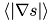
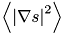
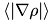
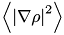
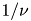

Go to the source code of this file.
Defines | |
| #define | WINDLLEXPORT |
Typedefs | |
| typedef unsigned long long int | MC_HANDLE |
Functions | |
| WINDLLEXPORT MC_HANDLE | MCload (char *fname) |
| The function loads the magnetic configuration stored in the file fname. | |
| WINDLLEXPORT MC_HANDLE | MCloadVMEC (char *fname) |
| The function loads the VMEC wout-file stored in the file fname. | |
| WINDLLEXPORT MC_HANDLE | MCloadLHD (char *fname) |
| The function loads the magnetic configuration with Boozer coordinates from the file in LHD-format. | |
| WINDLLEXPORT MC_HANDLE | MCloadEQDSK (char *fname, double scaleBpol, double scaleBtor, int signBpol, int signBtor, int signQ, int psiOverTwopi) |
The method loads magnetic configuration stored in the EQDSK file fname. | |
| WINDLLEXPORT MC_HANDLE | MCcopy (MC_HANDLE mConfSrc) |
| The function creates the copy of the object. | |
| WINDLLEXPORT void | MCfree (MC_HANDLE mConf) |
| Free all memory used. | |
| WINDLLEXPORT double | MCgetB00 (MC_HANDLE mConf) |
| Get the B00 value of the magnetic field on axis. | |
| WINDLLEXPORT double | MCgetB0 (MC_HANDLE mConf, double ficyl) |
| Get the value of the magnetic field on axis at cylindrical angle. | |
| WINDLLEXPORT void | MCsetB00 (MC_HANDLE mConf, double B00) |
| Set the B00 value of magnetic field on magnetic axis. | |
| WINDLLEXPORT void | MCsetsmax (MC_HANDLE mConf, double smax) |
| Set the value of smax. | |
| WINDLLEXPORT void | MCsetB0 (MC_HANDLE mConf, double B0, double ficyl) |
| Set the value of magnetic field on magnetic axis at given cylindrical angle. | |
| WINDLLEXPORT void | MCsetIpLCMS (MC_HANDLE mConf, double Ip) |
| Set the value of magnetic field by setting the poloidal current Ip at LCMS (s=1). | |
| WINDLLEXPORT void | MCsetAccuracy (MC_HANDLE mConf, double epsA) |
| Set accuracy of coordinate transformation. | |
| WINDLLEXPORT void | MCtruncate (MC_HANDLE mConf, double epsTrunc) |
| Set truncation level to reduce number of harmonics used in summation. | |
| WINDLLEXPORT double | MCreff (MC_HANDLE mConf, double s) |
| The function returns effective radius in [m]. | |
| WINDLLEXPORT double | MCVprime (MC_HANDLE mConf, double s) |
| The function returns V'(s) = dVolume/ds in [m^3]. | |
| WINDLLEXPORT double | MCVolume (MC_HANDLE mConf, double s) |
| The function returns plasma volume V(s) in [m^3]. | |
| WINDLLEXPORT void | MCmag2xyz (MC_HANDLE mConf, const double *magCoord, double *xyz) |
| The function returns the cartesian coordinates of the point. | |
| WINDLLEXPORT void | MCmix2xyz (MC_HANDLE mConf, const double *mixCoord, double *xyz) |
| The method returns cartesian coordinates which correspond to the mixed coordinates. | |
| WINDLLEXPORT double | MCxyz2s (MC_HANDLE mConf, const double *xyz) |
| The function finds the flux label s which corresponds to the point in space. | |
| WINDLLEXPORT void | MCxyz2mag (MC_HANDLE mConf, const double *xyz, double *mag) |
| WINDLLEXPORT double | MCgetBxyz (MC_HANDLE mConf, const double *xyz, double *B) |
| The function returns cartesian B-vector. | |
| WINDLLEXPORT double | MCgetGradBxyz (MC_HANDLE mConf, const double *xyz, double *gradB) |
| The function returns cartesian grad(|B|) vector. | |
| WINDLLEXPORT int | MCgetRayIntersectionPoints (MC_HANDLE mConf, const double *r0, const double *rd, double *entryPoint, double *exitPoint) |
| The method traces the Last Closed Magnetic Surface (LCMS). | |
| WINDLLEXPORT double | MCFlux (MC_HANDLE mConf, double s) |
| The method returns the toroidal flux in Wb. | |
| WINDLLEXPORT double | MCtorFlux2polFlux (MC_HANDLE mConf, double s) |
| The function returns the normalized poloidal flux, where s is the normalized toroidal flux. | |
| WINDLLEXPORT double | MCPoloidalFlux (MC_HANDLE mConf, double s) |
| The method returns the poloidal flux in Wb. | |
| WINDLLEXPORT double | MCsToroidal (MC_HANDLE mConf, double spoloidal) |
| The method returns the normalized toroidal flux, where s is the normalized poloidal flux. | |
| WINDLLEXPORT double | MCiota (MC_HANDLE mConf, double s) |
| The function returns the iota (=1/q) value , where s is the normalized toroidal flux. | |
| WINDLLEXPORT double | MCiotaPrime (MC_HANDLE mConf, double s) |
| The function returns the diota/ds value, where s is the normalized toroidal flux. | |
| WINDLLEXPORT double | MCIp (MC_HANDLE mConf, double s) |
| The method returns the poloidal current in [A]. | |
| WINDLLEXPORT double | MCIt (MC_HANDLE mConf, double s) |
| The method returns the toroidal current in [A]. | |
| WINDLLEXPORT double | MCBmax (MC_HANDLE mConf, double s) |
| The method returns the maximum value of magnetic field on the surface s. | |
| WINDLLEXPORT double | MCgradsAvrg (MC_HANDLE mConf, double s) |
| The method returns <|grad(s)|> . | |
| WINDLLEXPORT double | MCgrads2Avrg (MC_HANDLE mConf, double s) |
| The method returns <(grad(s))^2> . | |
| WINDLLEXPORT double | MCgradRhoAvrg (MC_HANDLE mConf, double s) |
| The method returns <|grad(rho)|> , where rho=sqrt(s). | |
| WINDLLEXPORT double | MCgradRho2Avrg (MC_HANDLE mConf, double s) |
| The method returns <(grad(rho))^2> , where rho=sqrt(s). | |
| WINDLLEXPORT double | MCftrapped (MC_HANDLE mConf, double s) |
| The method returns the fraction of trapped particles on the surface s. | |
| WINDLLEXPORT double | MCFbs (MC_HANDLE mConf, double s) |
| The method returns the bootstrap current geometric factor for  transport, using s as a flux surface label, where s is the normalized toroidal flux. | |
| WINDLLEXPORT double | MCFbsVmec (MC_HANDLE mConf, double s) |
| The method returns the bootstrap current geometric factor for transport, using VMEC definition of minor radius r=a*sqrt(s), where s is the normalized toroidal flux. | |
| WINDLLEXPORT double | MCFbsg2 (MC_HANDLE mConf, double s) |
| The method returns flux surface average of g2, where g2 is defined as B*grad(g2/B^2) = B x grad(s) * grad(1/B^2), s is the normalized toroidal flux. | |
| WINDLLEXPORT double | MCFbsu (MC_HANDLE mConf, double s) |
| The method returns flux surface average of u, where u is defined as B*grad(u) = -B x grad(s) * grad(1/B^2), s is the normalized toroidal flux. | |
| WINDLLEXPORT double | MCFbsuB2 (MC_HANDLE mConf, double s) |
| The method returns flux surface average of u*B^2, where u is defined as B*grad(u) = -B x grad(s) * grad(1/B^2), s is the normalized toroidal flux. | |
| WINDLLEXPORT double | MCFbsu2B2 (MC_HANDLE mConf, double s) |
| The method returns flux surface average of u^2*B^2, where u is defined as B*grad(u) = -B x grad(s) * grad(1/B^2), s is the normalized toroidal flux. | |
| WINDLLEXPORT double | MCFbsB2 (MC_HANDLE mConf, double s) |
| The method returns flux surface average of B^2. | |
| WINDLLEXPORT double | MCFbsg4 (MC_HANDLE mConf, double s, double mu) |
| The method returns flux surface average of g4, where g4 is defined as B*grad(g4/xi) = B x grad(s) * grad(1/xi) and xi = sqrt(1 - mu*B/Bmax), s is the normalized toroidal flux. | |
| WINDLLEXPORT void | MCFbsSetSlabelParam (MC_HANDLE mConf, double smin, double smax, int size) |
| The method sets parameters for calculating the bootstrap current geometric factor. | |
| WINDLLEXPORT void | MCFbsSetXeffParam (MC_HANDLE mConf, double xmin, double xmax, int size) |
| The method sets parameters for calculating the bootstrap current geometric factor. | |
| WINDLLEXPORT void | MCFbsSetTracingParam (MC_HANDLE mConf, int turns, bool doAccuracyTest, double dphi) |
| The method sets parameters for calculating the bootstrap current geometric factor. | |
| WINDLLEXPORT void | MCFbsSetIotaParam (MC_HANDLE mConf, bool avoidResonances, bool useRationalIota, int iotaDenominator) |
| The method sets parameters for calculating the bootstrap current geometric factor. | |
| WINDLLEXPORT void | MCFbsSetMagnMomentParam (MC_HANDLE mConf, int muLevels, double yMax) |
| The method sets parameters for calculating the bootstrap current geometric factor. | |
| WINDLLEXPORT int | MCcreateMeshUsingSymmetry (MC_HANDLE mConf, double dr, double dz, double dfi) |
| The function creates 3d-mesh in cylindrical coordinates. | |
| WINDLLEXPORT int | MCcreateMesh (MC_HANDLE mConf, double dr, double dz, double dfi) |
| The function creates 3d-mesh in cylindrical coordinates. | |
| WINDLLEXPORT int | M3DgetRayEntryPoint (MC_HANDLE mConf, const double *r0, const double *rd, double *entryPoint) |
| The function traces the Last Closed Magnetic Surface (LCMS). | |
| WINDLLEXPORT double | M3DgetBGradsxyz (MC_HANDLE mConf, const double *xyz, double *B, double *grads) |
| The function returns cartesian B-vector. | |
| WINDLLEXPORT double | M3DgetBxyz (MC_HANDLE mConf, const double *xyz, double *B) |
| The function returns cartesian B-vector. | |
| WINDLLEXPORT double | M3DgetGradBxyz (MC_HANDLE mConf, const double *xyz, double *gradB) |
| The function returns cartesian grad(|B|) vector. | |
| WINDLLEXPORT double | M3DgetBandGradBxyz (MC_HANDLE mConf, const double *xyz, double *B, double *gradB, double *gradS) |
| The method returns Cartesian vectors B, grad(|B|), and grad(s). | |
| WINDLLEXPORT double | M3DgetBandGradB (MC_HANDLE mConf, const double *cyl, double *B, double *gradB, double *gradS) |
| The method returns cylindrical vectors B, grad(|B|)=(dB/dr, dB/dfi/r, dB/dz), and grad(s). | |
| WINDLLEXPORT double | M3Dxyz2s (MC_HANDLE mConf, const double *xyz) |
| The function finds the flux label s which corresponds to the point in space. | |
| WINDLLEXPORT double | M3DgetdB_Gradsxyz (MC_HANDLE mConf, const double *xyz, double *B, double *dBdx, double *dBdy, double *dBdz, double *gradS) |
| WINDLLEXPORT double | MCgetdB_Gradsxyz (MC_HANDLE mConf, const double *xyz, double *B, double *dBdx, double *dBdy, double *dBdz, double *gradS) |
| WINDLLEXPORT double | M3DgetdGradsxyz (MC_HANDLE mConf, const double *xyz, double *gradS, double *dGdx, double *dGdy, double *dGdz) |
| WINDLLEXPORT double | MCepsEff (MC_HANDLE mConf, double s) |
| The method returns the effective helical ripple for transport. | |
| WINDLLEXPORT void | MCgetBandGradientsxyz (MC_HANDLE mConf, const double *magCoord, double *B, double *gradB, double *gradS, double *gradTh, double *gradPh) |
| Get B and gradients in cartesian coordinates. | |
| WINDLLEXPORT void | MCgetBandBasisVectorsxyz (MC_HANDLE mConf, const double *u, double *xyz, double *Bxyz, double *gradBxyz, double *e1con, double *e2con, double *e3con, double *e1cov, double *e2cov, double *e3cov) |
| Get B and basis vectors in cartesian coordinates. | |
| WINDLLEXPORT double | MCgetLocalShear (MC_HANDLE mConf, const double *magCoord) |
| The method returns the local shear. | |
| WINDLLEXPORT int | MCsetLCMS (MC_HANDLE mConf, double newLastSurface) |
| The methods transform the current magnetic configuration to new mesh on s. | |
| WINDLLEXPORT int | MCwrite (MC_HANDLE mConf, const char *fname) |
| The methods writes the current magnetic configuration into the file fname. | |
| WINDLLEXPORT void | MCgetCoeffForAstraCode (MC_HANDLE mConf, double sqrts, double *r, double *gradr2Avr, double *J, double *G2, double *hVprime, double *B0, double *R0, double *h) |
| WINDLLEXPORT double | MCS11 (MC_HANDLE mConf, double s) |
| The method calculates the Susceptance matrix in (Flux,theta,phi)-coordinates. | |
| WINDLLEXPORT double | MCS12 (MC_HANDLE mConf, double s) |
| Susceptance matrix: S12 in (Flux,theta,phi)-coordinates. | |
| WINDLLEXPORT double | MCS21 (MC_HANDLE mConf, double s) |
| Susceptance matrix: S21 in (Flux,theta,phi)-coordinates. | |
| WINDLLEXPORT double | MCS22 (MC_HANDLE mConf, double s) |
| Susceptance matrix: S22 in (Flux,theta,phi)-coordinates. | |
| WINDLLEXPORT double | MCBoozerBmn (MC_HANDLE mConf, double s, int m, int n) |
| The method returns B_mn(s) for Boozer coordinates. | |
| WINDLLEXPORT double | MCR0 (MC_HANDLE mConf) |
| The method returns the major radius. | |
| WINDLLEXPORT double | MCelongation (MC_HANDLE mConf, double s) |
| The method returns the elongation: e = (r(s)/R0)^2/(B10(s)/B00(s))^2, where Bmn are in Boozer coordinates, see MCBoozerBmn(). | |
| WINDLLEXPORT double | MCJacobian (MC_HANDLE mConf, const double *magCoord) |
| The method returns the Jacobian(s,theta,phi) Volume element is dV = Jacobian(s,theta,phi)*ds*dtheta*dphi. | |
| WINDLLEXPORT void | MCuseMixedProductForJacobian (MC_HANDLE mConf, int yesNo) |
| The method forces to use Jacobian=dX/dFlux*(dX/dtheta^dX/dphi) for calculating B field if yesNo>0. | |
| WINDLLEXPORT void | MCsetBdirection (MC_HANDLE mConf, int sign) |
| The method sets the direction of B with respect to cylindrical angle of the right handed coordinate system. | |
| WINDLLEXPORT int | MCgetBdirection (MC_HANDLE mConf) |
| The method returns the direction of B with respect to cylindrical angle of the right handed cylindrical coordinate system. | |
| WINDLLEXPORT void | MCrestoreBdirection (MC_HANDLE mConf) |
| The method sets the original direction of B with respect to cylindrical angle of the right handed coordinate system. | |
| #define WINDLLEXPORT |
| typedef unsigned long long int MC_HANDLE |
Definition at line 26 of file mconf_matlab.h.
| WINDLLEXPORT MC_HANDLE MCload | ( | char * | fname | ) |
The function loads the magnetic configuration stored in the file fname.
The function recognizes the format of the file by analyzing its contents; bc-, bc-binary-, LHD- and VMEC(wout, version>=6.20)-format are supported. For bc-format see W7-X format. On exit the function returns the handle of the object, that holds magnetic configuration.
| [in] | fname | is the name of the file to load. |
Definition at line 117 of file mconf_matlab.cpp.
| WINDLLEXPORT MC_HANDLE MCloadVMEC | ( | char * | fname | ) |
The function loads the VMEC wout-file stored in the file fname.
No transformation to Boozer representation is performed. On exit the function returns the handle of the object, that holds magnetic configuration.
| [in] | fname | is the name of the file to load. |
Definition at line 122 of file mconf_matlab.cpp.
| WINDLLEXPORT MC_HANDLE MCloadLHD | ( | char * | fname | ) |
The function loads the magnetic configuration with Boozer coordinates from the file in LHD-format.
On exit the function returns the handle of the object, that holds magnetic configuration.
| [in] | fname | is the name of the file to load. |
Definition at line 127 of file mconf_matlab.cpp.
| WINDLLEXPORT MC_HANDLE MCloadEQDSK | ( | char * | fname, | |
| double | scaleBpol, | |||
| double | scaleBtor, | |||
| int | signBpol, | |||
| int | signBtor, | |||
| int | signQ, | |||
| int | psiOverTwopi | |||
| ) |
The method loads magnetic configuration stored in the EQDSK file fname.
The method import equilibrium from the EQDSK File into straight-field-line coordinates system (s,theta,phi) with the cylindrical angle phi as the toroidal angle. The right handed cylindrical coodinate system (r,phi,z) is used. The system (s,theta,phi) can be left or right handed; the direction of theta and correspondingly the Jacobian sign depends on Bpol, Btor directions and the sign of safety factor, see below.
The value of the following parameters BpolScale, BtorScale, BpolSign, BtorSign, qSign, psiOverTwopi can be put in the first line of the EQDSK file, for example
RC-ITER... 06-DEC-02 3 129 129 EQDSK BpolScale=0 BtorScale=0 BpolSign=1 BtorSign=1 qSign=1 psi/2pi=no
| [in] | fname | is the name of G EQDSK file |
| [in] | BpolScale | is the scale factor for the poloidal field, the factor sign is ignored, BpolScale=0 means that the scale factor is taken from the the first line of the EQDSK file if it found, otherwise no scaling is performed. |
| [in] | BtorScale | is the scale factor for the toroidal field, the same logic as for poloidal field scaling. |
| [in] | BpolSign | sets the sign of the poloidal field (by changing sign of the poloidal flux psi):
|
| [in] | BtorSign | sets the sign of the toroidal field:
|
| [in] | qSign | sets the sign of the safety factor, qSign is taken from the EQDSK file if this parameter is zero, if qSign not found in the file or qSign=0 in it then the safety factor is defined by the q values stored in the EQDSK file. |
| [in] | psiOverTwopi | defines whether the poloidal flux psi is divided by 2pi:
|
Definition at line 132 of file mconf_matlab.cpp.
The function creates the copy of the object.
The function works as a C++ copy constructor. On exit the function returns the handle of the object, that holds magnetic configuration.
| [in] | mConfSrc | is the handle of the magnetic configuration to be copied. |
Definition at line 147 of file mconf_matlab.cpp.
| WINDLLEXPORT void MCfree | ( | MC_HANDLE | mConf | ) |
Free all memory used.
The function works as a C++ destructor.
| [in] | mConf | is the handle of the magnetic configuration to be released. |
Definition at line 157 of file mconf_matlab.cpp.
| WINDLLEXPORT double MCgetB00 | ( | MC_HANDLE | mConf | ) |
Get the B00 value of the magnetic field on axis.
| [in] | mConf | is the handle of the magnetic configuration. |
Definition at line 162 of file mconf_matlab.cpp.
| WINDLLEXPORT double MCgetB0 | ( | MC_HANDLE | mConf, | |
| double | ficyl | |||
| ) |
Get the value of the magnetic field on axis at cylindrical angle.
| [in] | mConf | is the handle of the magnetic configuration. |
| [in] | ficyl | is the value[radians] of cylindrical angle. |
Definition at line 180 of file mconf_matlab.cpp.
| WINDLLEXPORT void MCsetB00 | ( | MC_HANDLE | mConf, | |
| double | B00 | |||
| ) |
Set the B00 value of magnetic field on magnetic axis.
| [in] | mConf | is the handle of the magnetic configuration. |
| [in] | B00 | is the value[Tesla] of magnetic field to set. |
Definition at line 168 of file mconf_matlab.cpp.
| WINDLLEXPORT void MCsetsmax | ( | MC_HANDLE | mConf, | |
| double | smax | |||
| ) |
Set the value of smax.
| [in] | mConf | is the handle of the magnetic configuration. |
| [in] | smax | is the maximum value of s for extrapolation. |
Definition at line 174 of file mconf_matlab.cpp.
| WINDLLEXPORT void MCsetB0 | ( | MC_HANDLE | mConf, | |
| double | B0, | |||
| double | ficyl | |||
| ) |
Set the value of magnetic field on magnetic axis at given cylindrical angle.
| [in] | mConf | is the handle of the magnetic configuration. |
| [in] | B0 | is the value[Tesla] of magnetic field to set. |
| [in] | ficyl | is the value[radians] of cylindrical angle. |
Definition at line 186 of file mconf_matlab.cpp.
| WINDLLEXPORT void MCsetIpLCMS | ( | MC_HANDLE | mConf, | |
| double | Ip | |||
| ) |
Set the value of magnetic field by setting the poloidal current Ip at LCMS (s=1).
| [in] | mConf | is the handle of the magnetic configuration. |
| [in] | Ip | is the value[A] of the poloidal current to set. |
Definition at line 192 of file mconf_matlab.cpp.
| WINDLLEXPORT void MCsetAccuracy | ( | MC_HANDLE | mConf, | |
| double | epsA | |||
| ) |
Set accuracy of coordinate transformation.
| [in] | mConf | is the handle of the magnetic configuration. |
| [in] | epsA | is the absolute accuracy[m] of the transformation from cylindrycal to magnetic coordinates. |
Definition at line 205 of file mconf_matlab.cpp.
| WINDLLEXPORT void MCtruncate | ( | MC_HANDLE | mConf, | |
| double | epsTrunc | |||
| ) |
Set truncation level to reduce number of harmonics used in summation.
For each flux surface this function calculates M and N such that Bmn/B00>epsTrunc for m<M and |n|<N. Then only harmonics with m<M and |n|<N are used in summation.
| [in] | mConf | is the handle of the magnetic configuration. |
| [in] | epsTrunc | is the truncation level. |
Definition at line 199 of file mconf_matlab.cpp.
| WINDLLEXPORT double MCreff | ( | MC_HANDLE | mConf, | |
| double | s | |||
| ) |
The function returns effective radius in [m].
| [in] | mConf | is the handle of the magnetic configuration. |
| [in] | s | is the normalized toroidal flux. |
Definition at line 261 of file mconf_matlab.cpp.
| WINDLLEXPORT double MCVprime | ( | MC_HANDLE | mConf, | |
| double | s | |||
| ) |
The function returns V'(s) = dVolume/ds in [m^3].
| [in] | mConf | is the handle of the magnetic configuration. |
| [in] | s | is the normalized toroidal flux. |
Definition at line 307 of file mconf_matlab.cpp.
| WINDLLEXPORT double MCVolume | ( | MC_HANDLE | mConf, | |
| double | s | |||
| ) |
The function returns plasma volume V(s) in [m^3].
| [in] | mConf | is the handle of the magnetic configuration. |
| [in] | s | is the normalized toroidal flux. |
Definition at line 313 of file mconf_matlab.cpp.
| WINDLLEXPORT void MCmag2xyz | ( | MC_HANDLE | mConf, | |
| const double * | magCoord, | |||
| double * | xyz | |||
| ) |
The function returns the cartesian coordinates of the point.
| [in] | mConf | is the handle of the magnetic configuration. |
| [in] | magCoord | is the array(s,theta,phi) in magnetic coordinates |
| [out] | xyz | is the cartesian coordinates. |
Definition at line 291 of file mconf_matlab.cpp.
| WINDLLEXPORT void MCmix2xyz | ( | MC_HANDLE | mConf, | |
| const double * | mixCoord, | |||
| double * | xyz | |||
| ) |
The method returns cartesian coordinates which correspond to the mixed coordinates.
| [in] | mConf | is the handle of the magnetic configuration. |
| [in] | mixCoord | are the mixed coordinates, array[3] =(s,theta,fi), where s is the flux surface label, theta is the magnetic poloidal angle, fi is the cylindrical angle. |
| [out] | xyz | is the cartesian coordinates. |
Definition at line 299 of file mconf_matlab.cpp.
| WINDLLEXPORT double MCxyz2s | ( | MC_HANDLE | mConf, | |
| const double * | xyz | |||
| ) |
The function finds the flux label s which corresponds to the point in space.
| [in] | mConf | is the handle of the magnetic configuration. |
| [in] | xyz | is the input parameter with the cartesian coordinates of the point of interest. |
Definition at line 223 of file mconf_matlab.cpp.
| WINDLLEXPORT void MCxyz2mag | ( | MC_HANDLE | mConf, | |
| const double * | xyz, | |||
| double * | mag | |||
| ) |
| [in] | mConf | is the handle of the magnetic configuration. |
| [in] | xyz | is the input parameter with the cartesian coordinates of the point of interest. |
Definition at line 230 of file mconf_matlab.cpp.
| WINDLLEXPORT double MCgetBxyz | ( | MC_HANDLE | mConf, | |
| const double * | xyz, | |||
| double * | B | |||
| ) |
The function returns cartesian B-vector.
| [in] | mConf | is the handle of the magnetic configuration. |
| [in] | xyz | is the cartesian coordinates |
| [out] | B | is the cartesian B-field vector |
Definition at line 238 of file mconf_matlab.cpp.
| WINDLLEXPORT double MCgetGradBxyz | ( | MC_HANDLE | mConf, | |
| const double * | xyz, | |||
| double * | gradB | |||
| ) |
The function returns cartesian grad(|B|) vector.
| [in] | mConf | is the handle of the magnetic configuration. |
| [in] | xyz | is the cartesian coordinates |
| [out] | gradB | is the cartesian grad(|B|) vector |
Definition at line 249 of file mconf_matlab.cpp.
| WINDLLEXPORT int MCgetRayIntersectionPoints | ( | MC_HANDLE | mConf, | |
| const double * | r0, | |||
| const double * | rd, | |||
| double * | entryPoint, | |||
| double * | exitPoint | |||
| ) |
The method traces the Last Closed Magnetic Surface (LCMS).
The method finds intersections of the ray with the LCMS, where the ray is R(t)=r0+rd*t, and t>=0.
| [in] | mConf | is the handle of the magnetic configuration. |
| r0 | is the Cartesian coordinates of the ray origin, must be outside with respect to the LCMS, | |
| rd | is the direction of the ray in Cartesian coordinates, | |
| entryPoint | this vector at return contains the Cartesian coordinates of the ray entry point into the plasma, | |
| exitPoint | this vector at return contains the Cartesian coordinates of the ray exit point from the plasma, |
Definition at line 211 of file mconf_matlab.cpp.
| WINDLLEXPORT double MCFlux | ( | MC_HANDLE | mConf, | |
| double | s | |||
| ) |
The method returns the toroidal flux in Wb.
| s | is the normalized toroidal flux. |
Definition at line 349 of file mconf_matlab.cpp.
| WINDLLEXPORT double MCtorFlux2polFlux | ( | MC_HANDLE | mConf, | |
| double | s | |||
| ) |
The function returns the normalized poloidal flux, where s is the normalized toroidal flux.
Definition at line 273 of file mconf_matlab.cpp.
| WINDLLEXPORT double MCPoloidalFlux | ( | MC_HANDLE | mConf, | |
| double | s | |||
| ) |
The method returns the poloidal flux in Wb.
| s | is the normalized toroidal flux. |
Definition at line 279 of file mconf_matlab.cpp.
| WINDLLEXPORT double MCsToroidal | ( | MC_HANDLE | mConf, | |
| double | spoloidal | |||
| ) |
The method returns the normalized toroidal flux, where s is the normalized poloidal flux.
Definition at line 285 of file mconf_matlab.cpp.
| WINDLLEXPORT double MCiota | ( | MC_HANDLE | mConf, | |
| double | s | |||
| ) |
The function returns the iota (=1/q) value , where s is the normalized toroidal flux.
Definition at line 319 of file mconf_matlab.cpp.
| WINDLLEXPORT double MCiotaPrime | ( | MC_HANDLE | mConf, | |
| double | s | |||
| ) |
The function returns the diota/ds value, where s is the normalized toroidal flux.
Definition at line 325 of file mconf_matlab.cpp.
| WINDLLEXPORT double MCIp | ( | MC_HANDLE | mConf, | |
| double | s | |||
| ) |
The method returns the poloidal current in [A].
| s | is the normalized toroidal flux. |
Definition at line 331 of file mconf_matlab.cpp.
| WINDLLEXPORT double MCIt | ( | MC_HANDLE | mConf, | |
| double | s | |||
| ) |
The method returns the toroidal current in [A].
| s | is the normalized toroidal flux. |
Definition at line 337 of file mconf_matlab.cpp.
| WINDLLEXPORT double MCBmax | ( | MC_HANDLE | mConf, | |
| double | s | |||
| ) |
The method returns the maximum value of magnetic field on the surface s.
Definition at line 343 of file mconf_matlab.cpp.
| WINDLLEXPORT double MCgradsAvrg | ( | MC_HANDLE | mConf, | |
| double | s | |||
| ) |
| WINDLLEXPORT double MCgrads2Avrg | ( | MC_HANDLE | mConf, | |
| double | s | |||
| ) |
| WINDLLEXPORT double MCgradRhoAvrg | ( | MC_HANDLE | mConf, | |
| double | s | |||
| ) |
The method returns <|grad(rho)|> , where rho=sqrt(s).
Definition at line 368 of file mconf_matlab.cpp.
| WINDLLEXPORT double MCgradRho2Avrg | ( | MC_HANDLE | mConf, | |
| double | s | |||
| ) |
The method returns <(grad(rho))^2> , where rho=sqrt(s).
Definition at line 378 of file mconf_matlab.cpp.
| WINDLLEXPORT double MCftrapped | ( | MC_HANDLE | mConf, | |
| double | s | |||
| ) |
The method returns the fraction of trapped particles on the surface s.
The averaged fraction of trapped particles on a magnetic flux surface is only defined by the magnetic field strength:
FT = 1 - 3/4 * <B^2/Bmax^2> * int (0->1) xdx/<g(x)>
where <g(x)> is the flux surface average of sqrt(1-x*B/Bmax) with Bmax being the maximum of the magnetic field strength and = int int A*jacobian*dth*dph / int int jacobian*dth*dph is the definition of the flux surface average in magnetic coordinates.
Definition at line 387 of file mconf_matlab.cpp.
| WINDLLEXPORT double MCFbs | ( | MC_HANDLE | mConf, | |
| double | s | |||
| ) |
The method returns the bootstrap current geometric factor for transport, using s as a flux surface label, where s is the normalized toroidal flux.
g2 is defined as B*grad(g2/B^2) = B x grad(s) * grad(1/B^2), g4 is defined as B*grad(g4/xi) = B x grad(s) * grad(1/xi).
| s | is the normalized toroidal flux |
Definition at line 393 of file mconf_matlab.cpp.
| WINDLLEXPORT double MCFbsVmec | ( | MC_HANDLE | mConf, | |
| double | s | |||
| ) |
The method returns the bootstrap current geometric factor for transport, using VMEC definition of minor radius r=a*sqrt(s), where s is the normalized toroidal flux.
g2 is defined as B*grad(g2/B^2) = B x grad(r) * grad(1/B^2), g4 is defined as B*grad(g4/xi) = B x grad(r) * grad(1/xi).
| s | is the normalized toroidal flux |
MCFbsVmec = MCFbs*a*sqrt(s)/(2*s)
Definition at line 399 of file mconf_matlab.cpp.
| WINDLLEXPORT double MCFbsg2 | ( | MC_HANDLE | mConf, | |
| double | s | |||
| ) |
The method returns flux surface average of g2, where g2 is defined as B*grad(g2/B^2) = B x grad(s) * grad(1/B^2), s is the normalized toroidal flux.
| [in] | mConf | is the handle of the magnetic configuration. |
| [in] | s | is the normalized toroidal flux. |
Definition at line 405 of file mconf_matlab.cpp.
| WINDLLEXPORT double MCFbsu | ( | MC_HANDLE | mConf, | |
| double | s | |||
| ) |
The method returns flux surface average of u, where u is defined as B*grad(u) = -B x grad(s) * grad(1/B^2), s is the normalized toroidal flux.
| s | is the normalized toroidal flux |
Definition at line 411 of file mconf_matlab.cpp.
| WINDLLEXPORT double MCFbsuB2 | ( | MC_HANDLE | mConf, | |
| double | s | |||
| ) |
The method returns flux surface average of u*B^2, where u is defined as B*grad(u) = -B x grad(s) * grad(1/B^2), s is the normalized toroidal flux.
| s | is the normalized toroidal flux |
Definition at line 416 of file mconf_matlab.cpp.
| WINDLLEXPORT double MCFbsu2B2 | ( | MC_HANDLE | mConf, | |
| double | s | |||
| ) |
The method returns flux surface average of u^2*B^2, where u is defined as B*grad(u) = -B x grad(s) * grad(1/B^2), s is the normalized toroidal flux.
| s | is the normalized toroidal flux |
Definition at line 422 of file mconf_matlab.cpp.
| WINDLLEXPORT double MCFbsB2 | ( | MC_HANDLE | mConf, | |
| double | s | |||
| ) |
The method returns flux surface average of B^2.
| s | is the normalized toroidal flux |
Definition at line 428 of file mconf_matlab.cpp.
| WINDLLEXPORT double MCFbsg4 | ( | MC_HANDLE | mConf, | |
| double | s, | |||
| double | mu | |||
| ) |
The method returns flux surface average of g4, where g4 is defined as B*grad(g4/xi) = B x grad(s) * grad(1/xi) and xi = sqrt(1 - mu*B/Bmax), s is the normalized toroidal flux.
| [in] | mConf | is the handle of the magnetic configuration. |
| [in] | s | is the normalized toroidal flux. |
dphi = 0.017453; // twopi/360 = 0.017453 -> 1degree; doAccuracyTest =true; avoidResonances=false; useRationalIota=false; iotaDenominator=150; turns=100; yMax=15; numMuLevels=257; size = 101; smin = .0025; smax = .9;
Definition at line 435 of file mconf_matlab.cpp.
| WINDLLEXPORT void MCFbsSetSlabelParam | ( | MC_HANDLE | mConf, | |
| double | smin, | |||
| double | smax, | |||
| int | size | |||
| ) |
The method sets parameters for calculating the bootstrap current geometric factor.
| [in] | mConf | is the handle of the magnetic configuration. |
| [in] | smin | is the minimal value of s, where s is the normalized toroidal flux, |
| [in] | smax | is the maximal value of s, |
| [in] | size | is the number of points for creating look-up table |
Definition at line 441 of file mconf_matlab.cpp.
| WINDLLEXPORT void MCFbsSetXeffParam | ( | MC_HANDLE | mConf, | |
| double | xmin, | |||
| double | xmax, | |||
| int | size | |||
| ) |
The method sets parameters for calculating the bootstrap current geometric factor.
| [in] | mConf | is the handle of the magnetic configuration. |
| [in] | xmin | is the minimal value of sqrt(s), where s is the normalized toroidal flux, |
| [in] | xmax | is the maximal value of sqrt(s), |
| [in] | size | is the number of points for creating look-up table |
Definition at line 447 of file mconf_matlab.cpp.
| WINDLLEXPORT void MCFbsSetTracingParam | ( | MC_HANDLE | mConf, | |
| int | turns, | |||
| bool | doAccuracyTest, | |||
| double | dphi | |||
| ) |
The method sets parameters for calculating the bootstrap current geometric factor.
| [in] | mConf | is the handle of the magnetic configuration. |
| [in] | turns | is the maximal number of toroidal turns for a magnetic field line following, |
| [in] | doAccuracyTest | -- if true then integrating along magnetic field line is stopped when relative accuracy is less then 2% |
| dphi | is the toroidal angle step in radian for the magnetic field line following. |
Definition at line 453 of file mconf_matlab.cpp.
| WINDLLEXPORT void MCFbsSetIotaParam | ( | MC_HANDLE | mConf, | |
| bool | avoidResonances, | |||
| bool | useRationalIota, | |||
| int | iotaDenominator | |||
| ) |
The method sets parameters for calculating the bootstrap current geometric factor.
| [in] | mConf | is the handle of the magnetic configuration. |
| [in] | avoidResonances | -- if true then change of flux surface label value to avoid iota resonances is attempted, |
| [in] | useRationalIota | -- if true then rational iota aproximation is used, |
| [in] | iotaDenominator | is the denominator guess for the rational iota aproximation. |
Definition at line 459 of file mconf_matlab.cpp.
| WINDLLEXPORT void MCFbsSetMagnMomentParam | ( | MC_HANDLE | mConf, | |
| int | muLevels, | |||
| double | yMax | |||
| ) |
The method sets parameters for calculating the bootstrap current geometric factor.
| [in] | mConf | is the handle of the magnetic configuration. |
| [in] | muLevels | is the number of integration points over magnetic moment, |
| [in] | yMax | is the new integration limit after variable change from the magnetic moment mu to y with mu = tanh(y), see N.Nakajima et al, Nuclear Fusion,29,605(1989), http://dx.doi.org/10.1088/0029-5515/29/4/006 |
Definition at line 465 of file mconf_matlab.cpp.
| WINDLLEXPORT int MCcreateMeshUsingSymmetry | ( | MC_HANDLE | mConf, | |
| double | dr, | |||
| double | dz, | |||
| double | dfi | |||
| ) |
The function creates 3d-mesh in cylindrical coordinates.
The function tabulates the magnetic field, the flux surface label, and grad(s); the periodicity (B(r,fi,z)=B(r,fi+period,z)) and symmetry (Br(r,fi,z)=-Br(r,-fi,-z)) of the device are used.
| [in] | mConf | is the handle of the magnetic configuration. |
| [in] | dr | is the mesh step in r-direction. |
| [in] | dz | is the mesh step in z-direction. |
| [in] | dfi | is the mesh step in fi-direction, where fi is the cylindrical angle in radians. |
Definition at line 480 of file mconf_matlab.cpp.
| WINDLLEXPORT int MCcreateMesh | ( | MC_HANDLE | mConf, | |
| double | dr, | |||
| double | dz, | |||
| double | dfi | |||
| ) |
The function creates 3d-mesh in cylindrical coordinates.
The function tabulates the magnetic field, the flux surface label, and grad(s); the periodicity of the device is taken into account.
| [in] | mConf | is the handle of the magnetic configuration. |
| [in] | dr | is the mesh step in r-direction. |
| [in] | dz | is the mesh step in z-direction. |
| [in] | dfi | is the mesh step in fi-direction, where fi is the cylindrical angle in radians. |
Definition at line 473 of file mconf_matlab.cpp.
| WINDLLEXPORT int M3DgetRayEntryPoint | ( | MC_HANDLE | mConf, | |
| const double * | r0, | |||
| const double * | rd, | |||
| double * | entryPoint | |||
| ) |
The function traces the Last Closed Magnetic Surface (LCMS).
The function finds intersections of the ray with the LCMS, where the ray is R(t)=r0+rd*t, and t>=0.
| [in] | mConf | is the handle of the magnetic configuration. |
| [in] | r0 | is the origin of the ray, must be outside with respect to the LCMS. |
| [in] | rd | is the direction of the ray |
| [in] | entryPoint | this vector at return contains the coordinates of the ray entry point into the plasma. |
Definition at line 487 of file mconf_matlab.cpp.
| WINDLLEXPORT double M3DgetBGradsxyz | ( | MC_HANDLE | mConf, | |
| const double * | xyz, | |||
| double * | B, | |||
| double * | grads | |||
| ) |
The function returns cartesian B-vector.
4-points Lagrange interpolation is used.
| [in] | mConf | is the handle of the magnetic configuration. |
| [in] | xyz | is the cartesian coordinates |
| [out] | B | is the cartesian B-field vector |
| [out] | grads | is the cartesian grads vector |
Definition at line 551 of file mconf_matlab.cpp.
| WINDLLEXPORT double M3DgetBxyz | ( | MC_HANDLE | mConf, | |
| const double * | xyz, | |||
| double * | B | |||
| ) |
The function returns cartesian B-vector.
4-points Lagrange interpolation is used.
| [in] | mConf | is the handle of the magnetic configuration. |
| [in] | xyz | is the cartesian coordinates |
| [out] | B | is the cartesian B-field vector |
Definition at line 497 of file mconf_matlab.cpp.
| WINDLLEXPORT double M3DgetGradBxyz | ( | MC_HANDLE | mConf, | |
| const double * | xyz, | |||
| double * | gradB | |||
| ) |
The function returns cartesian grad(|B|) vector.
| [in] | mConf | is the handle of the magnetic configuration. |
| [in] | xyz | is the cartesian coordinates |
| [out] | gradB | is the cartesian grad(|B|) vector |
Definition at line 507 of file mconf_matlab.cpp.
| WINDLLEXPORT double M3DgetBandGradBxyz | ( | MC_HANDLE | mConf, | |
| const double * | xyz, | |||
| double * | B, | |||
| double * | gradB, | |||
| double * | gradS | |||
| ) |
The method returns Cartesian vectors B, grad(|B|), and grad(s).
| [in] | mConf | is the handle of the magnetic configuration. |
| [in] | xyz | is the cartesian coordinates |
| [out] | B | is the cartesian B-field vector |
| [out] | gradB | is the cartesian grad(|B|) vector |
| [out] | gradS | is the cartesian grad(s) vector |
Definition at line 518 of file mconf_matlab.cpp.
| WINDLLEXPORT double M3DgetBandGradB | ( | MC_HANDLE | mConf, | |
| const double * | cyl, | |||
| double * | B, | |||
| double * | gradB, | |||
| double * | gradS | |||
| ) |
The method returns cylindrical vectors B, grad(|B|)=(dB/dr, dB/dfi/r, dB/dz), and grad(s).
| [in] | mConf | is the handle of the magnetic configuration. |
| [in] | cyl | is the cylindrical coordinates |
| [out] | B | is the cylindrical B-field vector |
| [out] | gradB | is the cylindrical grad(|B|) vector |
| [out] | gradS | is the cylindrical grad(s) vector |
Definition at line 531 of file mconf_matlab.cpp.
| WINDLLEXPORT double M3Dxyz2s | ( | MC_HANDLE | mConf, | |
| const double * | xyz | |||
| ) |
The function finds the flux label s which corresponds to the point in space.
| [in] | mConf | is the handle of the magnetic configuration. |
| [in] | xyz | is the input parameter with the cartesian coordinates of the point of interest. |
Definition at line 544 of file mconf_matlab.cpp.
| WINDLLEXPORT double M3DgetdB_Gradsxyz | ( | MC_HANDLE | mConf, | |
| const double * | xyz, | |||
| double * | B, | |||
| double * | dBdx, | |||
| double * | dBdy, | |||
| double * | dBdz, | |||
| double * | gradS | |||
| ) |
Definition at line 581 of file mconf_matlab.cpp.
| WINDLLEXPORT double MCgetdB_Gradsxyz | ( | MC_HANDLE | mConf, | |
| const double * | xyz, | |||
| double * | B, | |||
| double * | dBdx, | |||
| double * | dBdy, | |||
| double * | dBdz, | |||
| double * | gradS | |||
| ) |
Definition at line 564 of file mconf_matlab.cpp.
| WINDLLEXPORT double M3DgetdGradsxyz | ( | MC_HANDLE | mConf, | |
| const double * | xyz, | |||
| double * | gradS, | |||
| double * | dGdx, | |||
| double * | dGdy, | |||
| double * | dGdz | |||
| ) |
Definition at line 597 of file mconf_matlab.cpp.
| WINDLLEXPORT double MCepsEff | ( | MC_HANDLE | mConf, | |
| double | s | |||
| ) |
The method returns the effective helical ripple for transport.
28th EPS, http://epsppd.epfl.ch/Madeira/html/pdf/P5.055.pdf , EGA Vol.25A (2001) 1985-1988
| [in] | mConf | is the handle of the magnetic configuration. |
| [in] | s | is the normalized toroidal flux |
Definition at line 612 of file mconf_matlab.cpp.
| WINDLLEXPORT void MCgetBandGradientsxyz | ( | MC_HANDLE | mConf, | |
| const double * | magCoord, | |||
| double * | B, | |||
| double * | gradB, | |||
| double * | gradS, | |||
| double * | gradTh, | |||
| double * | gradPh | |||
| ) |
Get B and gradients in cartesian coordinates.
| [in] | Vector3d | magCoord(s,theta,phi) is a point in magnetic coordinates, |
| [out] | B | is the magnetic field in cartesian coordinates |
| [out] | gradB | is the grad(|B|) in cartesian coordinates |
| [out] | gradS | is the grad(s) |
| [out] | gradTh | is the grad(theta) |
| [out] | gradPh | is the grad(phi) |
Definition at line 619 of file mconf_matlab.cpp.
| WINDLLEXPORT void MCgetBandBasisVectorsxyz | ( | MC_HANDLE | mConf, | |
| const double * | u, | |||
| double * | xyz, | |||
| double * | Bxyz, | |||
| double * | gradBxyz, | |||
| double * | e1con, | |||
| double * | e2con, | |||
| double * | e3con, | |||
| double * | e1cov, | |||
| double * | e2cov, | |||
| double * | e3cov | |||
| ) |
Get B and basis vectors in cartesian coordinates.
| [in] | u | = (s,theta,phi) is the point magnetic-coordinates, |
| [out] | xyz | is the point cartesian-coordinates, |
| [out] | Bxyz | is the magnetic field in cartesian coordinates |
| [out] | gradBxyz | is the grad(|B|) in cartesian coordinates |
| [out] | e1con,e2con,e3con | are the contravariant-basis vectors e^i = grad(u^i) in cartesian coordinates |
| [out] | e1cov,e2cov,e3cov | are the covariant-basis vectors e_i = dX/du^i in cartesian coordinates |
Definition at line 634 of file mconf_matlab.cpp.
| WINDLLEXPORT double MCgetLocalShear | ( | MC_HANDLE | mConf, | |
| const double * | magCoord | |||
| ) |
The method returns the local shear.
| [in] | Vector3d | magCoord(s,theta,phi) is a point in magnetic coordinates, |
Definition at line 658 of file mconf_matlab.cpp.
| WINDLLEXPORT int MCsetLCMS | ( | MC_HANDLE | mConf, | |
| double | newLastSurface | |||
| ) |
The methods transform the current magnetic configuration to new mesh on s.
| [in] | mConf | is the handle of the magnetic configuration. |
| [in] | newLastSurface | is the value of new last closed magnetic surface in inits of current s (normalized toroidal flux), the old last surface will be at s_new = 1/sqrt(newLastSurface). |
| [in] | fname | is the filename under which the configuration is saved. |
Definition at line 667 of file mconf_matlab.cpp.
| WINDLLEXPORT int MCwrite | ( | MC_HANDLE | mConf, | |
| const char * | fname | |||
| ) |
The methods writes the current magnetic configuration into the file fname.
Definition at line 694 of file mconf_matlab.cpp.
| WINDLLEXPORT void MCgetCoeffForAstraCode | ( | MC_HANDLE | mConf, | |
| double | sqrts, | |||
| double * | r, | |||
| double * | gradr2Avr, | |||
| double * | J, | |||
| double * | G2, | |||
| double * | hVprime, | |||
| double * | B0, | |||
| double * | R0, | |||
| double * | h | |||
| ) |
Definition at line 703 of file mconf_matlab.cpp.
| WINDLLEXPORT double MCS11 | ( | MC_HANDLE | mConf, | |
| double | s | |||
| ) |
The method calculates the Susceptance matrix in (Flux,theta,phi)-coordinates.
See definition of the Susceptance matrix in P.I.Strand,W.A.Houlberg, Physics of Plasmas, 8, 2782(2001) The Susceptance matrix in (s,theta,phi)-coordinates can be expressed through relation S_ij(Flux)=S_ij(s)* dFlux/ds
| s | is the normalized toroidal flux, s = Flux/Flux_max |
Definition at line 719 of file mconf_matlab.cpp.
| WINDLLEXPORT double MCS12 | ( | MC_HANDLE | mConf, | |
| double | s | |||
| ) |
Susceptance matrix: S12 in (Flux,theta,phi)-coordinates.
Definition at line 725 of file mconf_matlab.cpp.
| WINDLLEXPORT double MCS21 | ( | MC_HANDLE | mConf, | |
| double | s | |||
| ) |
Susceptance matrix: S21 in (Flux,theta,phi)-coordinates.
Definition at line 731 of file mconf_matlab.cpp.
| WINDLLEXPORT double MCS22 | ( | MC_HANDLE | mConf, | |
| double | s | |||
| ) |
Susceptance matrix: S22 in (Flux,theta,phi)-coordinates.
Definition at line 737 of file mconf_matlab.cpp.
| WINDLLEXPORT double MCBoozerBmn | ( | MC_HANDLE | mConf, | |
| double | s, | |||
| int | m, | |||
| int | n | |||
| ) |
| WINDLLEXPORT double MCR0 | ( | MC_HANDLE | mConf | ) |
| WINDLLEXPORT double MCelongation | ( | MC_HANDLE | mConf, | |
| double | s | |||
| ) |
The method returns the elongation: e = (r(s)/R0)^2/(B10(s)/B00(s))^2, where Bmn are in Boozer coordinates, see MCBoozerBmn().
Definition at line 749 of file mconf_matlab.cpp.
| WINDLLEXPORT double MCJacobian | ( | MC_HANDLE | mConf, | |
| const double * | magCoord | |||
| ) |
The method returns the Jacobian(s,theta,phi) Volume element is dV = Jacobian(s,theta,phi)*ds*dtheta*dphi.
| magCoord | is the vector with magnetic coordinates (s,theta,phi). |
Definition at line 760 of file mconf_matlab.cpp.
| WINDLLEXPORT void MCuseMixedProductForJacobian | ( | MC_HANDLE | mConf, | |
| int | yesNo | |||
| ) |
The method forces to use Jacobian=dX/dFlux*(dX/dtheta^dX/dphi) for calculating B field if yesNo>0.
Definition at line 785 of file mconf_matlab.cpp.
| WINDLLEXPORT void MCsetBdirection | ( | MC_HANDLE | mConf, | |
| int | sign | |||
| ) |
The method sets the direction of B with respect to cylindrical angle of the right handed coordinate system.
| sign | is the positive or negative integer number. |
Definition at line 767 of file mconf_matlab.cpp.
| WINDLLEXPORT int MCgetBdirection | ( | MC_HANDLE | mConf | ) |
The method returns the direction of B with respect to cylindrical angle of the right handed cylindrical coordinate system.
Definition at line 773 of file mconf_matlab.cpp.
| WINDLLEXPORT void MCrestoreBdirection | ( | MC_HANDLE | mConf | ) |
The method sets the original direction of B with respect to cylindrical angle of the right handed coordinate system.
The original direction is the direction of B stored in the equilibrium file.
Definition at line 779 of file mconf_matlab.cpp.